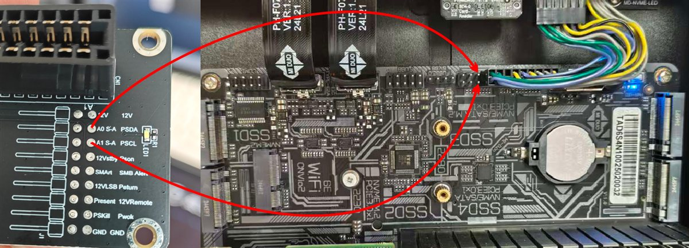

🔋 耗电统计
近 30 天每日耗电（kWh）· 每 15 秒采样一次输入功率积分累计，重启不丢
🖥 风扇控制
10%
自动模式由电源按温度调速，手动模式拖动滑杆调节转速。
🔌 GPIO 引脚配置

此功能需要连接硬盘背板 PSDA 和 PSCL 信号到主板的 FPANEL 19PIN 和 20PIN（不分方向），连接好后点击“自动识别保存”即可启用电源监管功能。
Pin19-22 四根 GPIO 已实测可双向。选择当前实际接到电源 PSCL/PSDA 的针脚后点“保存并应用”，后端立即切换并持久化，换线后改这里即可。自动探测会自动扫描 19-22 找到接线。